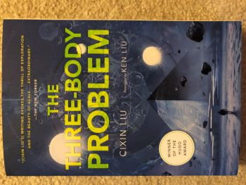

Home, WA
The first one was a gift from my daughter. I read a few pages then realized that it was translation from Chinese. Why didn't I just read the Chinese original?
The second one I bought on WeChat reading. I couldn't hold it after starting reading. This holiday season, Hence I was skiing during the day and was reading this book at night.
I highly recommend this book!!!
It's well worth reading. This book is very imposing! It is absolutely mind unfolding.
But it's best to read it yourself before giving it to children, because of the very desperate places in the middle.
Thank my daughter for giving me this good book!

×